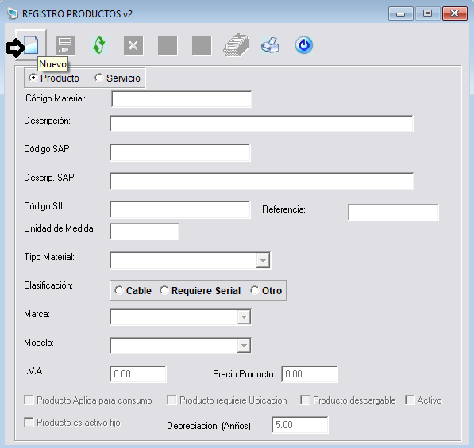
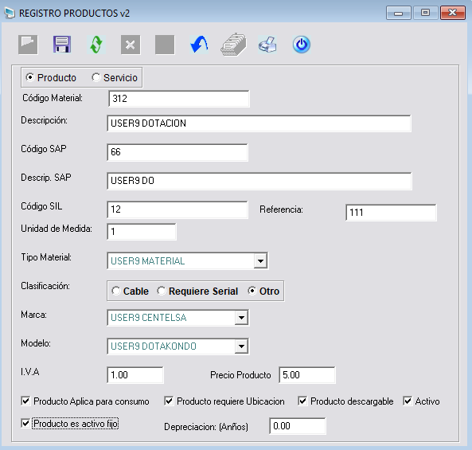
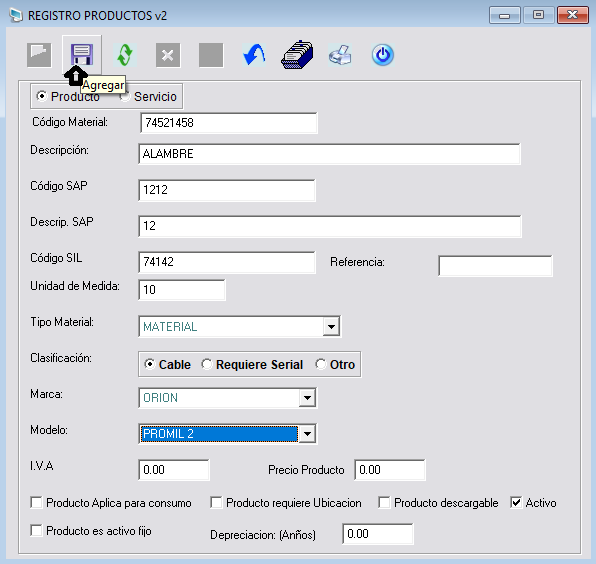

Mercancía
En SISCOS Materiales, Productos, Herramientas y Mercancías es lo mismos, el material varía con proveedores. Si se configura mal el material más adelante se obtendrán problemas. Se debe dar clic en el módulo material y se visualizará ventana de campos
solicitados u obligatorios.
Seguidamente dar clic en el botón Nuevo, que se encuentra ubicado en la barra vertical superior lado izquierdo, para que se puedan habilitar los demás botones.
Seguidamente dar clic en el botón Nuevo, que se encuentra ubicado en la barra vertical superior lado izquierdo, para que se puedan habilitar los demás botones.

Posteriormente se debe ingresar la información correspondiente del nuevo registro producto.

Se maneja una clasificación sea por Producto o Servicio.
Producto: que sea físicamente los suministros por bodega.
Servicio: administrar alquiler de grúa.
Tipos de servicios también se pueden agregar para llevar un control en los servicios que se han ingresado.
Código Material: son máximo 10 caracteres y es un código interno único que no se puede repetir.
Descripción: 180 caracteres. Código del cliente Código SAP y Código SIL, si se pueden repetir se puede tener el mismo código del cliente pero varios productos de SISCOS.
También tiene 3 clasificaciones del material como:
Material Propio: permite ingresar el IVA para tener un control.
Precio Producto: es el que aparece en el informe de entrega lo que se le cobra al técnico si lo Vota, Daña o Roba etc.
Producto Aplica para Consumo: si no se selecciona en SISCOS una de todas estas opciones mencionadas que son de mucha importancia, SISCOS permite hacer movimiento la transacción ya sea la entrega o la devolución. Pero si no tiene el chulito esto no se lo pasa a la bodega terreno. Es mejor que tengan el chulito y se mueva a la bodega terreno y evitar ciertos problemas.
Producto Descargable: seleccionar el chulo, hace referencia que si el producto está en bodega de terreno puede llevarlo a la bodega consumo a través de una O/S no se recomienda para dotación y herramienta.
Producto: que sea físicamente los suministros por bodega.
Servicio: administrar alquiler de grúa.
Tipos de servicios también se pueden agregar para llevar un control en los servicios que se han ingresado.
Código Material: son máximo 10 caracteres y es un código interno único que no se puede repetir.
Descripción: 180 caracteres. Código del cliente Código SAP y Código SIL, si se pueden repetir se puede tener el mismo código del cliente pero varios productos de SISCOS.
También tiene 3 clasificaciones del material como:
- Cable.
- Serial.
- Otros.
Material Propio: permite ingresar el IVA para tener un control.
Precio Producto: es el que aparece en el informe de entrega lo que se le cobra al técnico si lo Vota, Daña o Roba etc.
Producto Aplica para Consumo: si no se selecciona en SISCOS una de todas estas opciones mencionadas que son de mucha importancia, SISCOS permite hacer movimiento la transacción ya sea la entrega o la devolución. Pero si no tiene el chulito esto no se lo pasa a la bodega terreno. Es mejor que tengan el chulito y se mueva a la bodega terreno y evitar ciertos problemas.
Producto Descargable: seleccionar el chulo, hace referencia que si el producto está en bodega de terreno puede llevarlo a la bodega consumo a través de una O/S no se recomienda para dotación y herramienta.
Agregar
Esta opción se encuentra ubicada en la barra vertical superior lado izquierdo, dar clic en el botón y agrega un nuevo registro en el sistema SISCOS luego de haber ingresado la información solicitada u obligatoria.

Modificar
Esta funcionalidad se encuentra ubicada en la barra vertical superior lado izquierdo, permite hacer actualizaciones en registros existentes, para poder utilizar este botón debemos dar clic en el botón Modificar y luego ingresar el código del material. Seguidamente se debe dar en la tecla Enter para que arroje toda la información acerca de ese código y seleccionar que campo se desea modificar.

Asimismo dar clic en el la opción Guardar, para que se apliquen los cambios al registro seleccionado en el sistema y se actualice la información en la base de datos.

Otra forma de poder modificar un producto es dar clic en la opción Modificar, luego en la opción Buscar y realizar la búsqueda de los productos registrados en el sistema por
medio de los parámetros establecidos como se puede observar a continuación.

En el campo criterio se ingresa uno de los tipos de comodines como:
- (%) Todos.
- (%AEROSOL) Los que terminan.
- (AEROSOL%) Los que comiencen.

Finalmente cuando ya se tiene el registro, el usuario se ubica en el campo código y le da clic en la tecla enter y automáticamente se traslada la información a la ventana principal del producto. Analizamos que campo se le van aplicar los cambios, seguidamente
se debe dar clic en la opción Guardar.
El usuario debe dar clic en el icono Aceptar para que finalice el proceso de actualizar el registro en el sistema.
El usuario debe dar clic en el icono Aceptar para que finalice el proceso de actualizar el registro en el sistema.

Eliminar
Esta opción se encuentra ubicada en la barra horizontal superior lado izquierdo, para poder eliminar del listado de productos un registro, es que no esté asociado a otros registros en el sistema de lo contrario mostrará mensaje de error. Seguidamente,
dar clic en el icono Eliminar. El Sistema mostrará el siguiente mensaje al usuario, al cual dará clic en el icono Aceptar para efectuar la
eliminación o para cancelar.

Si no se elimina el material, la otra opción es que el usuario le quite el chulito y este ya inactivo.
Nota: En el sistema de información SISCOS no se puede eliminar material debido a que el material va asociado con un tipo de material, clasificación, marca
y modelo.
Consultar
Esta funcionalidad se encuentra ubicada en la barra horizontal superior, para realizar una consulta de todos los materiales registrados en el sistema, el usuario deberá seleccionar el tipo de parámetro de búsqueda como: Código, Descripción, Cod.SAP, Descripción
.SAP y Tipo material etc. Ingresando en el campo Buscar el comodín que desea para realizar la consulta y le arroje la información correspondiente.
Comodines:
Comodines:
- (%)Todos
- (%AEROSOL)Los que terminan
- (AEROSOL%)Los que comiencen

Documentos
Esta funcionalidad se encuentra ubicada en la barra horizontal superior, se debe dar clic en la opción Documento, esta función permite al usuario poder agregar Herramientas Documentos, Imágenes etc.
Para que se le haga al usuario más fácil tener información en tiempo real, dentro de esa ventana de archivos se encuentran las funciones como Eliminar, Abrir y Cancelar. En el archivo que se deban realizar durante el proceso.

Al seleccionar la opción de Archivo, el Sistema mostrará la ventana estándar de Windows denominada “Open”, donde se seleccionará la ruta donde se exportará el archivo. Dando clic en el botón OK de la ventana de búsqueda, se inicia el proceso de exportación. Al finalizar, el sistema carga el archivo y se verá reflejado la ruta, luego se debe dar clic en el botón Agregar para que se agregue
el archivo al sistema SISCOS.
Finalmente se agrega el archivo correctamente a SISCOS, de todos los productos.
Finalmente se agrega el archivo correctamente a SISCOS, de todos los productos.

Exportar listado de materiales
Se encuentra ubicada en la barra horizontal superior, se debe dar clic en la opción Exportar esta función permite al usuario poder generar un archivo en Excel de todos los materiales registrados
en el sistema de información SISCOS.

Salir
Para salir del módulo existen 2 opciones, a través de Cerrar ventana y la del botón Salir se debe dar clic en una de las opciones.
Finalmente dar clic en el botón Sí. Y se finaliza el proceso de Mercancía.
Finalmente dar clic en el botón Sí. Y se finaliza el proceso de Mercancía.